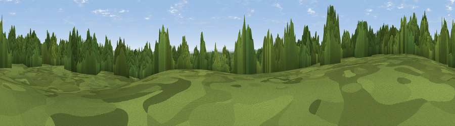

The Dodd
#33969 in England · top 75% of its area beats it · near FalstoneThe view, rendered

A 360° render of this exact spot computed from the terrain model, tree cover and land cover — summer colours, afternoon light, calibrated against photographs of famous viewpoints. Real trees, hedges and buildings will differ in detail.
The panorama
Grey silhouette: terrain skyline in each direction (720 bearings, Earth curvature and refraction included). Dashed green: skyline with trees (+15 m) and buildings (+8 m) as obstacles. Blue strip: how far the ground is visible on each bearing.
Where the view opens
Wedge length = distance to the farthest visible ground on that bearing (vegetation-aware). Rings at 10, 25 and 50 km.
What fills the view
62% woodland · 38% grassland
Angular shares of the visible panorama (visual magnitude), not map area. Landscape diversity 0.29 (0–1 Shannon).
Key numbers
More beautiful places nearby
The staircase of upgrades: each row has a higher view potential than everything closer. Driving times are estimates from straight-line distance, calibrated against real road routing — check an actual route before setting out.
| Place | Direction | Drive | Score |
|---|---|---|---|
| Viewpoint near Falstone | NE · 0 km | ~1 min | 39.9 |
| Earl's Seat | W · 2 km | ~6 min | 67.4 |
| Viewpoint near Greenhaugh | ESE · 5 km | ~12 min | 68.3 |
| Monkside | WNW · 6 km | ~12 min | 78.4 |
| Deadwater Fell | WNW · 12 km | ~22 min | 79.4 |
| Viewpoint c11995_7247 | WNW · 13 km | ~24 min | 82.1 |
| Viewpoint c12273_7856 | NE · 29 km | ~45 min | 83.7 |
| Viewpoint c12396_7887 | NE · 34 km | ~53 min | 85.7 |
55.22646, -2.41818 · source: osm peak · position refined by local search. Computed location — check access rights before visiting.